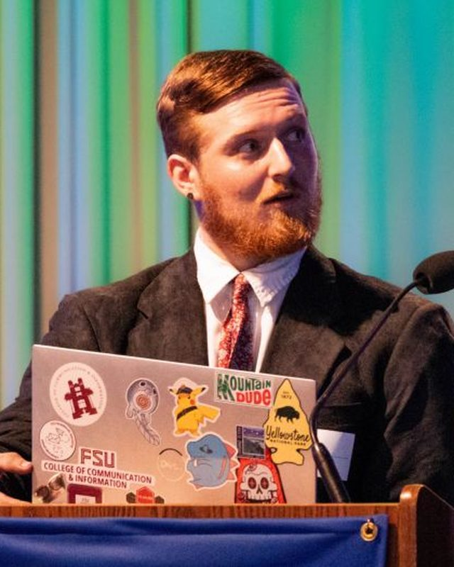

About
Background behind my IT path
I am an Information Technology student at Florida State University. I built this portfolio to give employers a clearer view of what I am learning and what I can already do.

Education
- Florida State University Working toward a B.S. in Information Technology with a 4.0 GPA, expected May 2027.
- Tallahassee State College Completed an A.A. in Information Technology from Spring 2023 through December 2025.
- Coursework to projects I use coursework as a starting point for portfolio projects so I can turn class concepts into practical examples.
Experience
- Florida State University, Communications Associate Supporting the Departments of Geography and Demography since August 2026. I restructured the departmental databases on my own initiative so records are consistent and easier to find, handle ongoing WordPress site edits and content updates for both departments, and own day-to-day communications including student and research spotlights, event graphics, and social media.
- Dickerson Landscaping, Nursery Manager A management role I have held since July 2026. I am responsible for the standing plant stock at the company's private nursery: tracking what is on hand, keeping the inventory healthy, and making sure material is ready when the crews need it. It is the clearest example on my resume of owning an operation end to end and being accountable for the condition it is in.
- FSUshadow, Florida Blue (May 2026) Selected through Florida State University's competitive matched job shadow program for a full day with Florida Blue's enterprise Information Security Engineering team. I observed Palo Alto security tools, troubleshooting, policies, and active security hardening in a real environment.
- Tallahassee Nurseries, Register Staff and Loading Team Lead Handled sales transactions, helped customers, supported training, and worked with the loading team in a fast-paced environment.
- Blue Parrot Oceanfront Cafe (Busser and Barback), SLS and Horizon Home Modifications (Laborer) Worked in service and labor roles that strengthened reliability, pace, teamwork, and communication.
Achievement and supporting documents
The first card is my President's List achievement. The rest are the certificates behind my infrastructure, service-management, networking, and troubleshooting background. Every one opens as a PDF.
Academic achievement
President's List Achievement
Spring 2026 4.0 GPA
This achievement reflects my Spring 2026 semester and gives employers a direct proof point that I can stay disciplined across a full course load.
What I got out of it: it reinforced that consistency, organization, and follow-through matter just as much as raw technical ability.
Open certificate PDFTechnical certificate
IT Infrastructure Fundamentals
This certificate strengthened my understanding of the basic infrastructure concepts behind networks, servers, and the environments technical teams support.
What I got out of it: it gave me a clearer baseline for how hardware, services, and connectivity fit together before moving deeper into projects.
Open certificate PDFTechnical certificate
IT Service Management Foundations: Problem Management
This certificate added service-management context around recurring issues, root-cause thinking, and how support teams reduce repeat problems.
What I got out of it: it helped me think beyond fixing one ticket and more about documenting patterns and preventing the same issue from coming back.
Open certificate PDFTechnical certificate
Networking Foundations: Networking Basics
This certificate supported the core networking concepts that also show up in my coursework and projects like LanSentinel.
What I got out of it: it gave me stronger vocabulary for IPs, connectivity, and network structure so I can explain project decisions more clearly.
Open certificate PDFTechnical certificate
Wireshark Network Troubleshooting
This certificate added exposure to network troubleshooting with Wireshark and the basics of reading traffic to spot communication issues.
What I got out of it: it pushed me to think more carefully about how problems appear on the wire instead of only at the application layer.
Open certificate PDFInvolvement at FSU
- ACM Association for Computing Machinery, FSU chapter.
- ThinkAI Student organization focused on artificial intelligence and machine learning.
- AITP Association of Information Technology Professionals.
- HISA Health informatics student organization, covering how IT and data work applies in healthcare settings.
Leadership through martial arts
My Certificate of Leadership from ATA Songahm Taekwondo is not a course I signed up for or a box I checked off. My instructors gave it to me because of how I was teaching the students under me and how I carried myself in the school, and they decided on their own that it was earned.
- Teaching and coaching I worked directly with students, breaking techniques down so they could actually follow them and adjusting how I explained things depending on who I was working with.
- Setting the example The recognition came from how I conducted myself day to day, not from a test score. In a school, the way you carry yourself is what the students copy.
- Why it matters for IT Teaching someone a technique they are struggling with is the same skill as walking a user through a problem they do not understand yet: patience, clear explanation, and staying steady when the other person is frustrated.
This certificate is a physical award and was never issued digitally, so it is not among the certificates above, but I can bring the original to an interview.
Additional background
- Adobe Certified Professional Illustrator and Photoshop, earned in 2023.
- Certificate of Game Design Award listed on my resume from George Mason University.
- Chinese Beginner conversational, as listed on my resume.
Let's talk
Hiring for a 2027 IT internship, or want to ask about a project? Email is the fastest way to reach me.